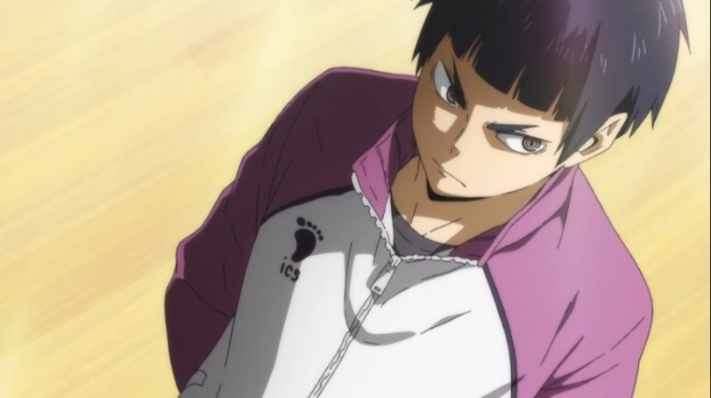
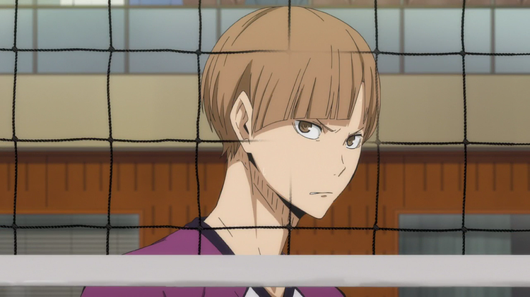
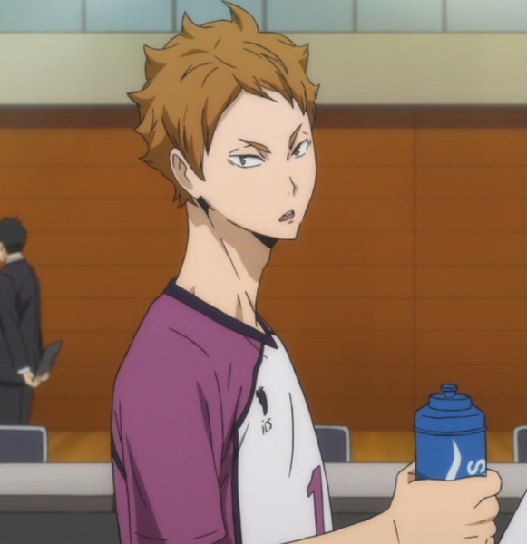
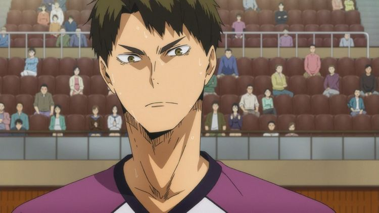
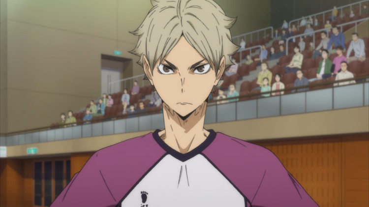
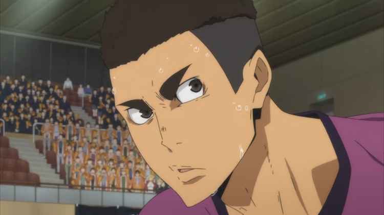
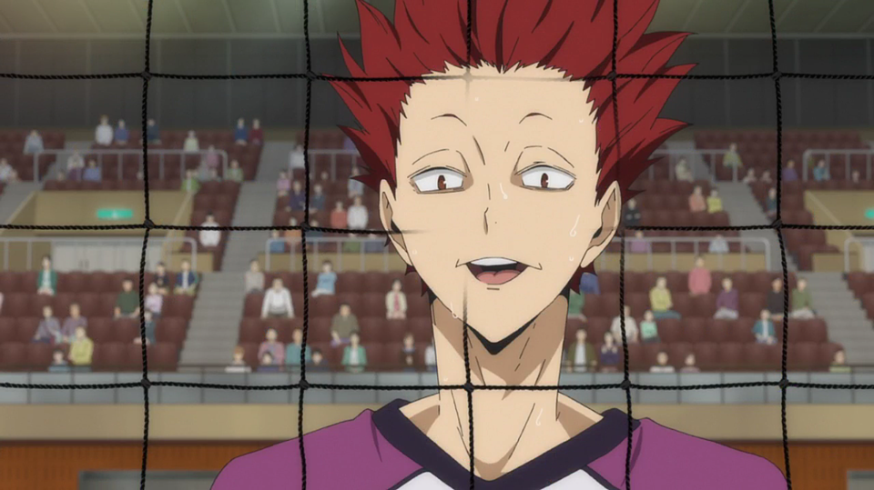
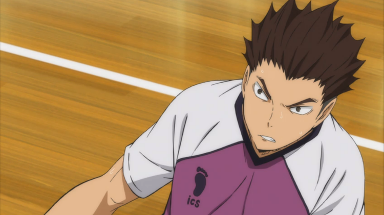

시라토리자와의 하이텐션 3인방 중 막내. 전체적으로 엄근진 포스를 풍기는 시라토리자와에서 텐도 사토리와 함께 개그를 맡고 있다. 정확히 말하자면 텐도는 자행해서 분위기를 띄우는 타입이고, 고시키는 의도한 것도 아닌데 가만히 있어도 웃긴 바보 막내 타입.마냥 단세포에 열혈인 것만 같지만 상당한 실력을 내포한 원석이다. 우시지마가 최종 보스 같은 분위기를 풍겨서 상대적으로 좀 덜 부각되는 편.
차분하고 똑부러지는 성격. 덕분에 무기력한 캐릭터로 오인하기 쉽지만, 자신의 배구 신념이 뚜렷하고 그것을 고수하는 모습을 보인다. 시라토리자와 학원 선수들 중 가장 부드러운 외형과 달리 무뚝뚝하고 차가운 성격의 소유자이기도 하다.탕탕거리는 속공을 이용한 날카로운 토스가 주력이었다.순한 겉모습과 다르게 입이 상당히 험하다.꼬인 성격은 아니지만 자신의 의지와 신념이 뚜렷하고 잘 굽히지 않는 탓에 성격이 좋다고 보기도 어렵다.
항상 딱딱한 표정을 짓고 있지만 무감정한 건 아니고 오히려 능청스럽다.텐도가 말하길 기본적으로 리드 블록을 하지만 상대에 따라 게스(커밋) 블록을 하고 리드 블록도 하는 잡식 블로커라고 한다. 지는 승부는 하지 않는 스타일.플레이 중 두뇌 회전이 상당히 좋은데, 다이치가 리시브 후 자세가 돌아오지 않은 걸 파악하고 라이트에서의 공격 가능성을 빠르게 버린 후 싱크로 공격을 셧아웃시킬 정도.
기본적으로 진중한 성격이나, 말을 돌려서 하지 않고 직설적으로 꽂아넣는 편이라 본의 아니게 사람 속을 긁는 때가 있다. 플레이스타일처럼 단순하고 강직한 면이 강한 캐릭터이다. 강한 곳으로 가서 강한 동료들과 어울리고 강한 상대들과 수준 높은 대전을 계속해야 한다는 아버지의 말을 그대로 받아들여서, 언더독에 대한 이해가 얕다.라이트 자리에서 각도 내기에 적합한 왼손잡이 공격수로, 압도적인 파워와 높이를 가졌다. 그야말로 대포다.
구체적으로 나오진 않았으나, 전반적으로 무뚝뚝한 선수들이 많은 시라토리자와에서 텐션이 높은 편이다.중학교 땐 실력이 꽤 뛰어난 세터였다. 작중 후배의 말을 빌리자면 "중학교 때 잘해서 유명했었는데"라고 말할 정도. 핀치 서버로 나왔을 때도 노터치 에이스를 따내는 등 세터외에도 실력이 남들보다 뒤떨어지지 않는다. 같은 세터인 시라부보다 뛰어난 실력을 가지고 있지만, 주전 세터가 아니다.
어른스럽고 온화한 성격이다.전국 최고로 손꼽히는 에이스인 우시지마에게 그 존재가 가려졌을 뿐, 다른 학교에 진학했으면 에이스를 하고도 남았을 실력자라는 사실이 언급되었다. 실제로 시라토리자와에서 우시지마, 레온 둘 다 파워가 5로 최대치이지만 팀이 우시지마 몰빵 배구 스타일이기 때문에 득점은 주로 우시지마가 맡고 있으며 레온은 적극적으로 공격에 참여하지 않고 철저하게 우시지마를 지원하는 플레이만을 한다.
시라토리자와의 하이텐션 3인방 중 대장급인 독보적 분위기 메이커이자 트래쉬 토커.경기 중 상대에게 짜증을 유발하는 존재지만 경기 밖에서나 팀원들에게는 유쾌하고 밝게 분위기를 띄워주는 등 갭이 큰 인물. 물론 방식이 괴짜같은 건 동일해서 세미세미세미는 당최 속을 모르겠다고 곤란해했다.별명인 '게스 몬스터'로, 상대 볼의 상황과 선수들의 움직임에다 섞여 있을 페인트까지 종합해 변수를 어림잡아 블로킹을 하는 '게스 블록'을 주로 해서 붙여진 이명이다.
항상 기합이 들어가있다. 하이큐!! 돈피샤 매치!!에서도 대사들이 하나같이 쾌남적이다.강호교에서 주전 리베로로 뽑힐 수 있었던 만큼 능력치가 좋다. 팀내에서 스텟 총합이 세미와 함께 우시지마 다음으로 높다. 특히 리베로는 스파이크를 때릴 일이 없는 포지션이라서 대부분의 리베로 캐릭터들은 파워가 2를 넘지 않는데, 하야토는 파워가 3이다.
